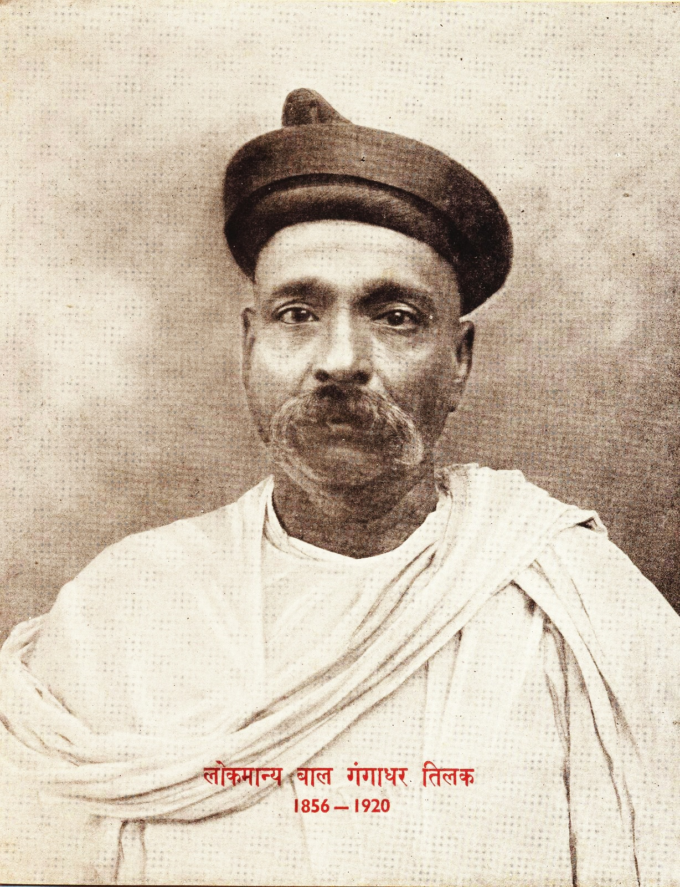

Bala Gangadhar Tilak

Born: 23 July 1856, Chikhali
Died: 1 August 1920, Mumbai
Famously Known As Lokmanya Tilak
Bal Gangadhar Tilak was a remarkable freedom fighter born in 1856. Famously known for his
quote, 'Swaraj is my Birthright. He published several rebellious newspapers and built schools to
defy British Rule. He was the third member of the Lal-Bal-Pal along with Lala Lajpat Rai and
Bipin Chandra Pal.
Tilak was born into a cultured middle-class Brahman family. Although his birth place was Bombay (Mumbai),
he was raised in a village along the Arabian Sea coast in what is now Maharashtra state until the age of 10,
when his father, an educator and noted grammarian, took a job in Poona (now Pune). The young Tilak was
educated at Deccan College in Poona, where in 1876,he earned bachelor's degrees in mathematics and Sanskrit.
Tilak then studied law, receiving his degree in 1879 from the University of Bombay (now Mumbai).
At that point, however, he decided to teach mathematics in a private school in Poona. The school became
the basis for his political career. He developed the institution into a university college after founding the
Deccan Education Society (1884), which aimed at educating the masses, especially in the English language;
he and his associates considered English to be a powerful force for the dissemination of liberal and democratic ideals.
The life members of the society were expected to follow an ideal of selfless service, but when Tilak learned that
some members were keeping outside earnings for themselves, he resigned. He then turned to the task of awakening
the political consciousness of the people through two weekly newspapers that he owned and edited: Kesari (“The Lion”),
published in Marathi, and The Mahratta, published in English. Through those newspapers Tilak became widely
known for his bitter criticisms of British rule and of those moderate nationalists who advocated social reforms
along Western lines and political reforms along constitutional lines. He thought that social reform would only
divert energy away from the political struggle for independence.